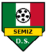
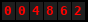
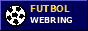

| Noticias / News | El Equipo / Team | Partidos / Games | Libro de Visitas | Links |
 |
¡Bienvenidos a la página oficial de Deportivo Semiz! El mejor equipo de la Liga Mexicana de Futbol Amateur de Talas. Desde 2000, de la Colonia para el mundo. Welcome to the official site of Deportivo Semiz! English below every news (more or less). |
| 28/05/2003 ¡¡GANAMOS 5-2 A VETERINARIOS!! |
|
Partidazo en la cancha de la torre de agua. Goles: el Güero Leyva (3!!! hat-trick), Kevin y Chuy de cabeza.
Los Veterinarios dicen que llegaron cansados del turno en la planta. Puras excusas, compa.
We beat Veterinarios 5-2! Güero scored three. They say they were tired from the shift at the plant. Excuses. |
| 26/05/2003 XV AÑOS DE YESENIA |
|
Los señores Gastélum Ruiz
tienen el honor de invitarles a celebrar los XV Años de su hija Yesenia Sábado 14 de junio de 2003 Misa de acción de gracias a las 5:00 pm en el centro comunitario (el viejo club de los bloques), porque la iglesia todavía la están construyendo. Después la fiesta en el patio de la familia, calle 4 de la Colonia. Habrá banda, tamales, carne asada y kymyz para los aksakales. Todo el equipo está invitado (es la hija del Profe!!). Profe dice que el Güero NO puede ser chambelán. Ya sabe por qué. Yesenia Gastélum's quinceañera (15th birthday) is Saturday 14 June. Mass at 5 pm in the community centre, then party at the family's house, street 4 of the Colonia. Iradi neighbours very welcome, the aksakals already asked if there is kymyz. Yes there is. |
| 20/05/2003 SE BUSCA PERRO / LOST DOG | ||
|
| 12/05/2003 Ganamos a Atlético Sonorense 3-1 |
|
Gracias a todas las mamás que fueron a apoyar aunque llovía. Feliz Día de las Madres atrasado!!
Goles: Chuy, Güero, y un autogol de ellos (cuenta igual).
Won 3-1 vs Atlético Sonorense. Thanks to all the moms who came in the rain. Happy (late) Mother's Day! |
| 05/05/2003 Perdimos el clásico :( |
|
Halcones de la Colonia 2, Deportivo Semiz 1. No hay mucho que decir. El árbitro es primo de su portero, todo el mundo sabe.
Revancha en septiembre.
We lost the derby 1-2 vs Halcones. The referee is cousin of their goalkeeper. Everybody knows. |
| 15/04/2003 Misa / Mass |
|
La construcción de la iglesia de San Yusup (o sea San José, pero aquí le dicen así) va lenta. El padre que vino de Culiacán dice que a lo mejor para 2005, si Dios quiere y si llega el dinero.
Mientras, la Misa en español es los domingos a las 11:00 en el centro comunitario. Después de Misa, cascarita en la cancha.
The church of St. Yusup is still being built (maybe 2005, the padre says). Until then Spanish Mass is Sundays 11:00 in the community centre. After Mass we play. |
| 02/04/2003 Algún día... |
|
El Profe Gastélum habló con un señor de la federación iradí de futbol en Talas. Le preguntó si algún día un equipo como nosotros puede jugar en la liga de Irad.
El señor dijo "algún día". El Profe dice que eso es un sí.
Coach Gastélum asked a man from the Iradi football federation if a team like us can one day play in the Irad league. He said "one day". Coach says that means yes. |

